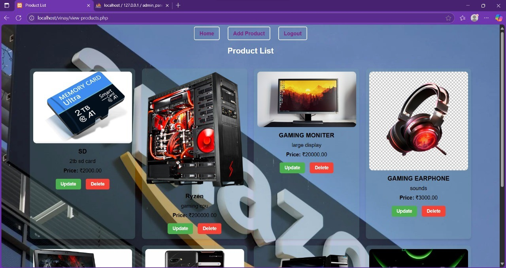
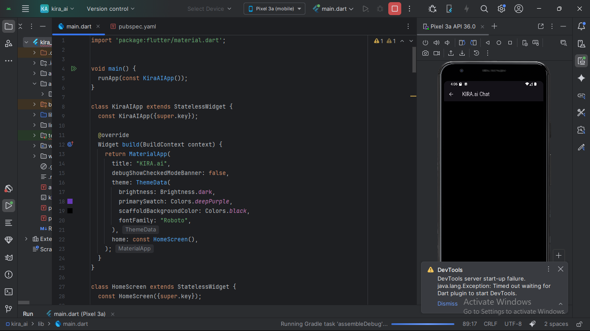
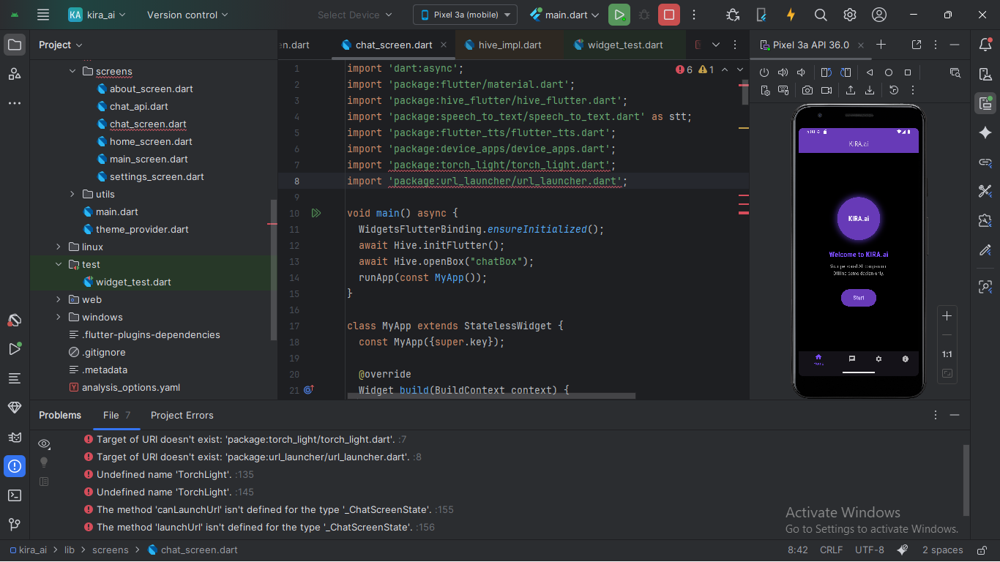
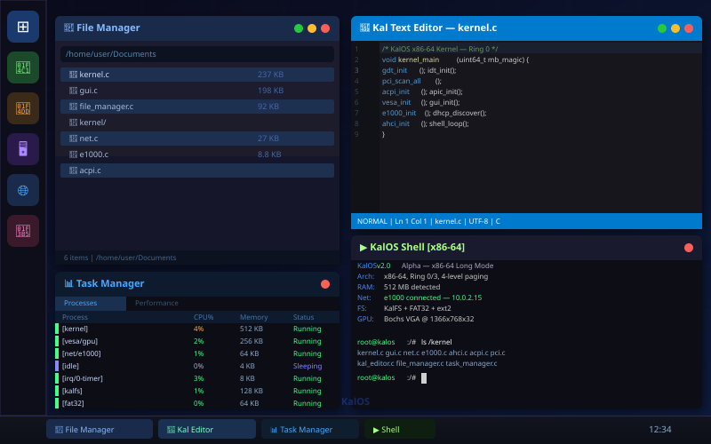

Projects





Full-Stack Developer · Systems Programmer · OS Developer · Creative Problem Solver
I'm Rohit — a developer who builds things from the ground up. Most recently I designed and built
KalOS, a fully custom x86-64 operating system written entirely in C and Assembly,
running on real hardware with a desktop GUI, networking stack, file manager, text editor, and more —
all without any external OS libraries.
Beyond systems programming, I bring hands-on full-stack experience building dynamic websites,
MySQL CRUD applications, and REST APIs with PHP, Python, JavaScript, SQL, Kotlin, and Flutter.
I use Python (Pandas, NumPy, Matplotlib, BeautifulSoup) for data analysis and scraping.
I care about clean, efficient code and I'm always curious about how things work at the lowest level.



Custom x86-64 Bare-Metal Operating System — Built from Scratch

KalOS is a fully custom operating system built entirely from scratch — no Linux, no Windows, no POSIX. Every component is hand-written in C and x86-64 Assembly: from the bootloader handoff through GDT/IDT setup, paging, memory management, PCI scanning, hardware drivers, a full desktop GUI, networking, and a multi-filesystem VFS. It boots on QEMU and real x86-64 hardware.
Email: rohitvinay24@example.com
GitHub: rohitvinay24
LinkedIn: Rohit Vinay N